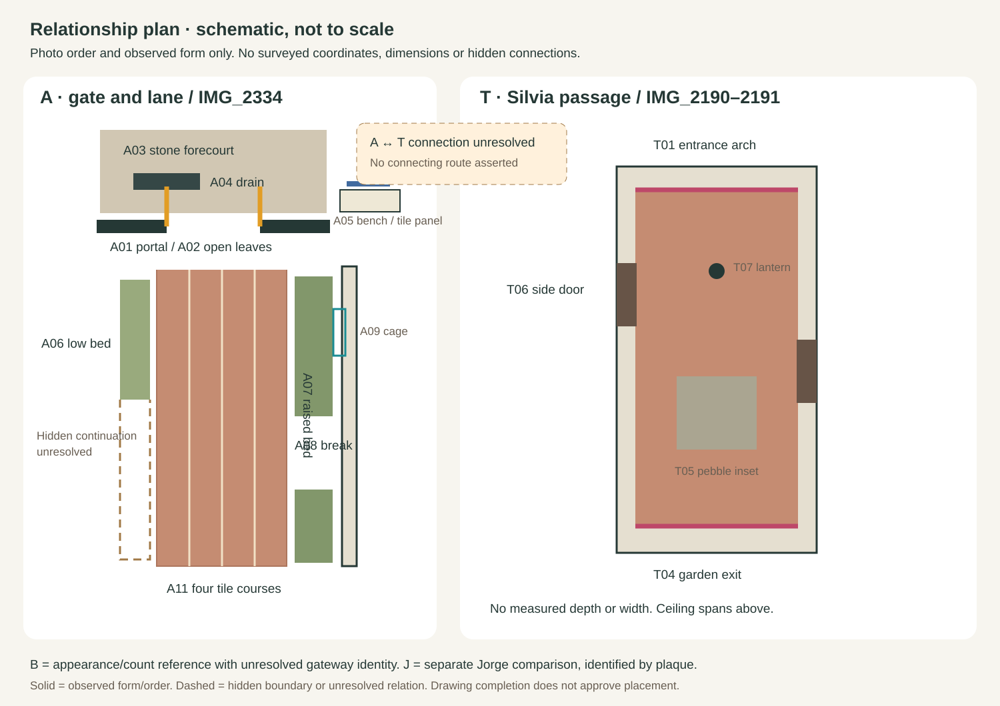
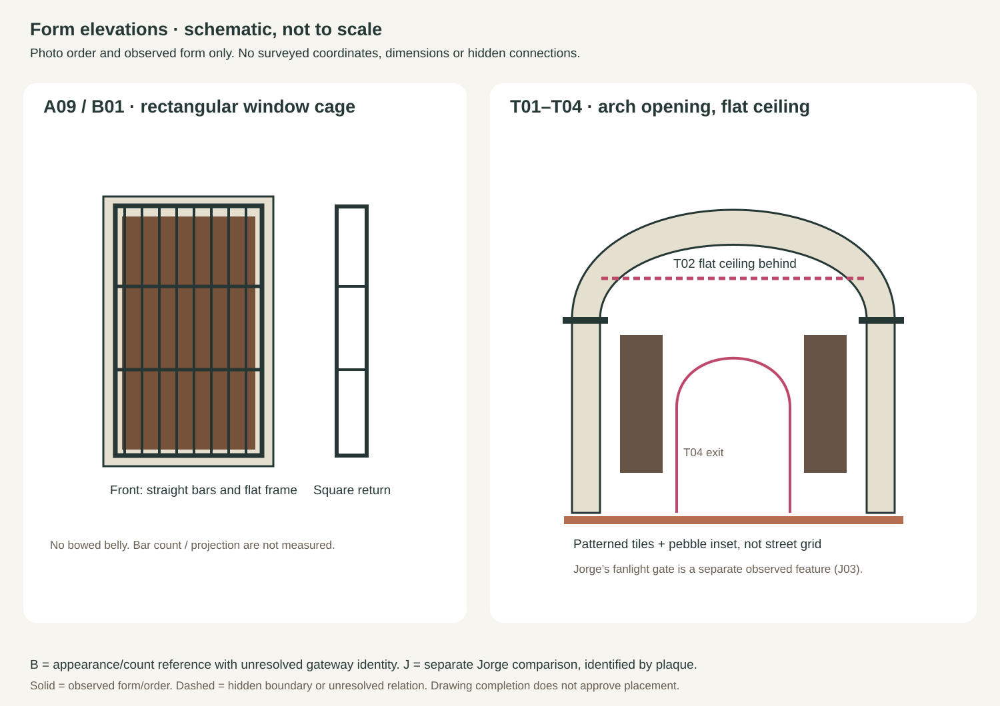

Solid lines: visible source traces. Dotted boxes: feature locators, not measured outlines. IDs connect the photo, checklist and drawings.
Relationship and form drawings
The panels preserve observed order and construction. They have no scale or surveyed coordinates. An unresolved connection stays separate.


What exists, what is represented, what remains open
Every numbered row records an observation, its pixel locator, draft model state and unknowns. A material citation does not complete a tunnel. Click a row to return to its source.
| ID | Component | Observed evidence | Model state | Still unknown |
|---|
Required completeness checks
Recorded exclusions
Repeat the pack, one physical scene at a time
- Inspect full sources. Group by signs, architecture and observed connections. Keep camera GPS separate.
- Inventory first. Openings, ceiling, walls, levels and route connections precede finishes and planting.
- Draw visible evidence. Number locators and traces; retain occluded edges and uncertain identity explicitly.
- Compare with the model. Link a pinned render/feature, or record absent, partial, material-only or unassessed.
- Resolve placement, then build. Use the existing measured review gate. Recheck every component in the after render.
Open the map-wide rollout board and 14 starter templates · Rollout JSON · Canonical resort map